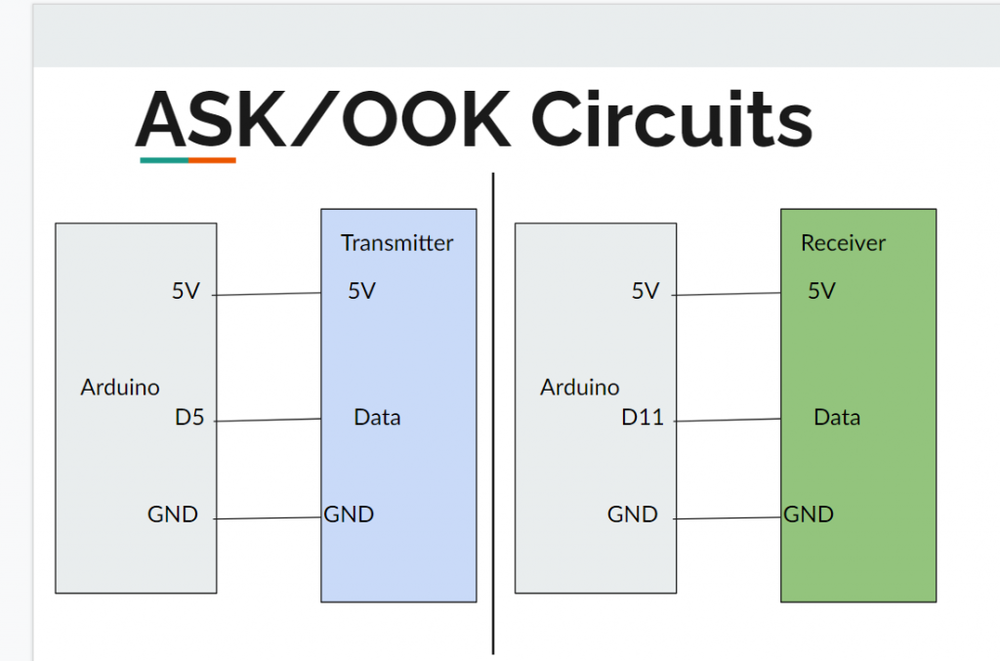

Electronics Bash - #14 - Wireless Signals
Wires? Where we're going we don't need... wires.... Except for power, ground, programming, buttons, others sensors, etc....
This week, we're continuing our looking at the Arduino, the most popular microcontroller platform on the planet. We'll be introducing the versatile Radiohead library, and using it to drive some inexpensive ASK/OOK 433 MHz modules to pass lightweight wireless signals between two Arduinos.
Topics Include:
- Radio fundamentals
- ASK/OOK
- Working with the Radiohead library
- *Pointers

Code Libraries
This week we'll be making extensive use of the Radiohead Library to handle wireless communication. You can download it from the link above. Notice that if you Google "Radiohead Library" you also will see github links to Sparkfun's fork of this library, which doesn't seem to be as up to date - I recommend using the source from Airspayce above.
Code

ASK Transmitter
Click here to view code on GithubASK Receiver
Click here to view code on GithubASK Transmit Integers
Click here to view code on GithubASK Receive Integers
Click here to view code on GithubASK Receiver Servo
Click here to view code on GithubASK Transmitter Servo
Click here to view code on GithubASK Receiver Servo and LED
Click here to view code on GithubASK Transmitter Servo and LED
Click here to view code on GithubLocal Variables Example
Click here to view code on GithubPointers as Arguments Example
Click here to view code on GithubBinary/Hex Slider Example (Processing)
Click here to view code on Github